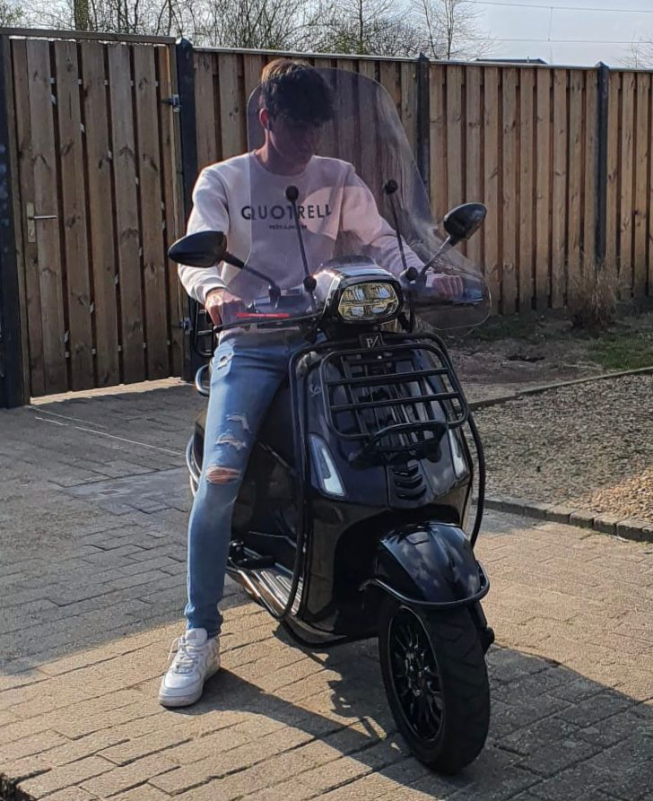

Over mij:
__________________________________________________________
Mijn naam is Keno Hartogs. Ik ben 18 jaar oud en woon in Maarheeze. Ik woon samen met mijn ouders en zus. Mijn hobby's zijn voetballen en scooter rijden. Veder vind ik het leuk om samen ergens wat te drinken met vrienden. Mijn opleiding. Ik volg een opleiding op het Sintlucas in Eindhoven Strijp-S. De opleiding die ik volg is SoftwareDevelopment. Deze opleidng duurt 4 jaar, ik zit nu in leerjaar 2 periode 7. Ik heb op de opleiding gewerkt met C# , CSS , Html , JS. Ik heb het meeste aan games gewerkt bij de opleiding, dit heb ik gedaan met C#. Ik zou zelf graag meer de website development kant opgaan, daarom wil ik een stage die hier mij in helpt.
